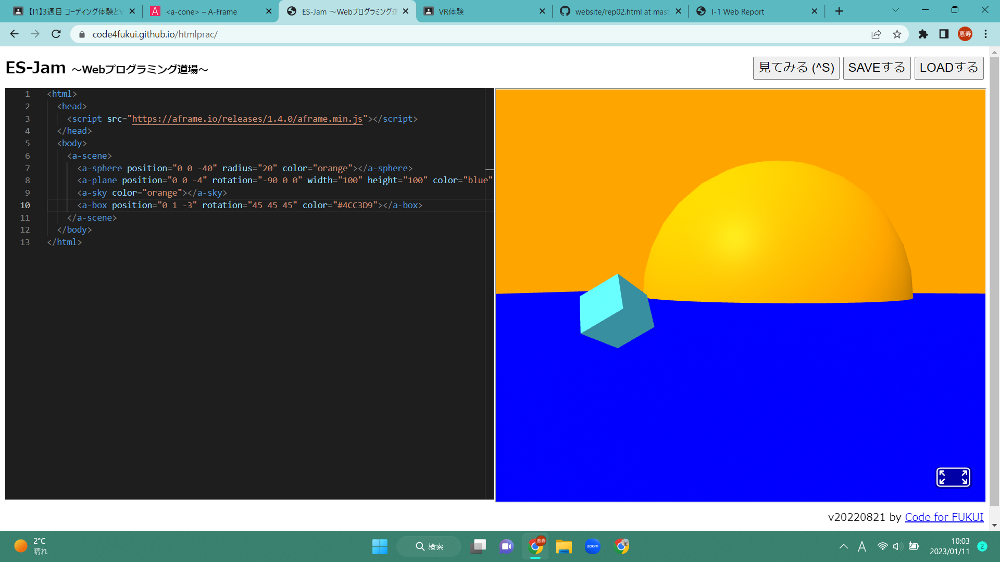

第3週目
3-1 JavaScript体験：VR空間を作る

3次元モデル
1.内容
JabaScriptを使用して、vr空間を作成した。
2.感想
とても感覚をつかむのに時間がかかった。自分は、コードを書いてでのvr空間の作成は自分に合っていないと感じた。
3-2 JavaScript体験：伝言プログラムを作る
伝言板
1.内容
ブラウザで伝言板アプリのプログラミングを行った。
2.感想
情報の授業の課題で、プログラミングの学習をしていたので、難なくプログラミングが出来た。
この他に、どのようなことが出来るのか気になったので、もう少しJavaScriptについて学んでみようと思った。
3-3 JavaScriptプログラムの３次元空間の体験
1.内容
vrゴーグルを装着して、JavaScriptでプログラムされた3次元空間を体験した。
2.感想
PC上でも見ることが出来たが、vrゴーグルで見たときのほうがオブジェクトのサイズ感がとても分かりやすかった。
このような技術を使えば、家具などの製品を購入するときに店舗に行かなくても、購入の決断がしやすくなると思った。